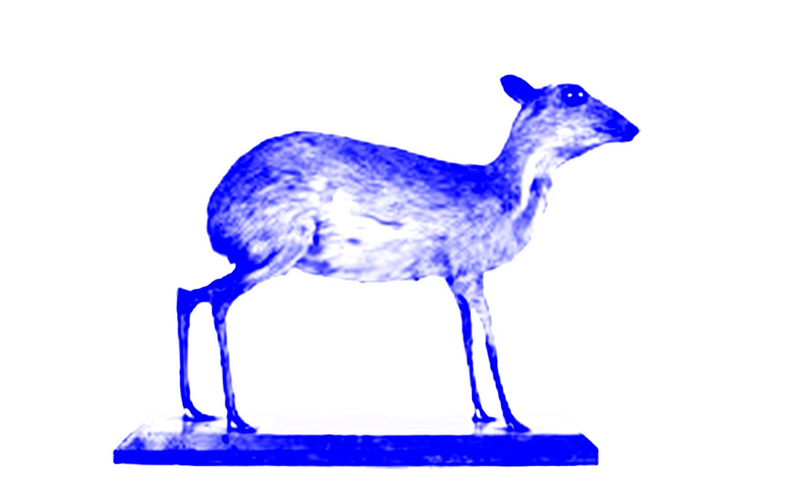
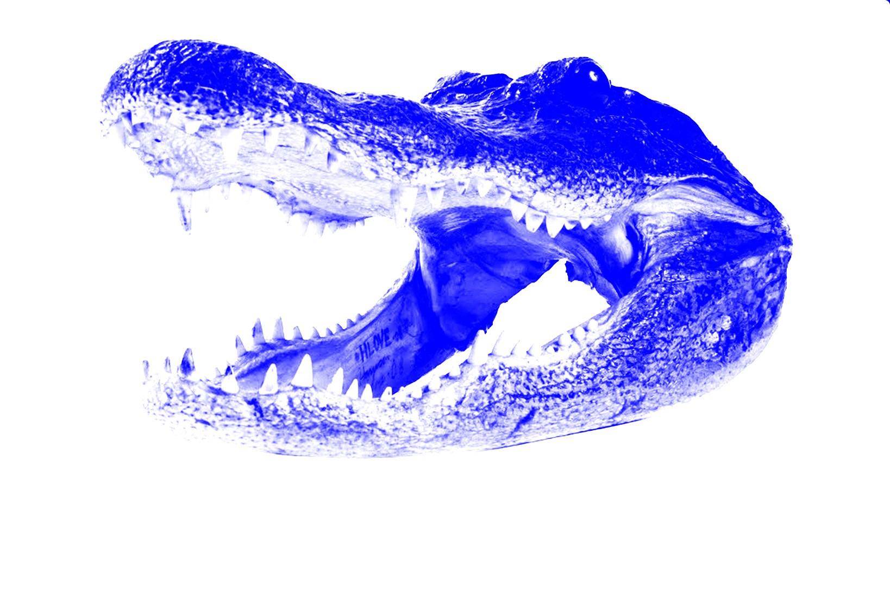
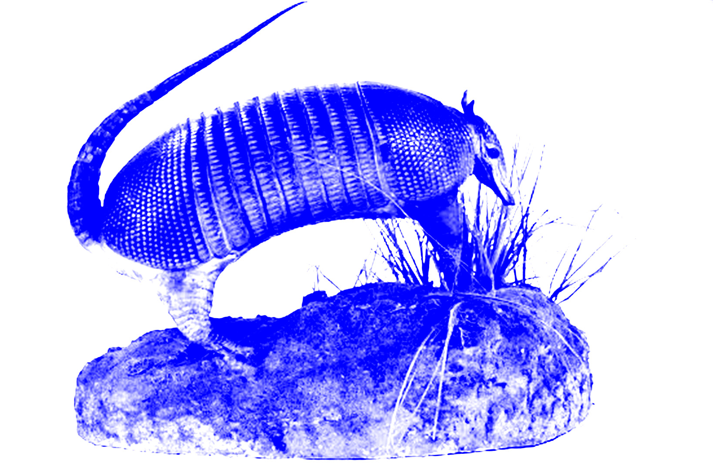

(WHO)
(WHAT)
(WHERE)
(WHEN)
(WHY)
The RISD Nature Lab is a teaching resource that was founded in the early 20th century by RISD faculty member Edna Lawrence. Lawrence’s goal was to engage students with the beauty of nature in order to inspire their art and design work. Today, the Nature Lab hosts an impressive collection of natural history specimens that visitors can interact with.
Growing up, my parents would often take me to the Nature Lab to draw and explore. Here’s a list of some of my favorite things in the Nature Lab.
1. Chevrotain (Deer-Mouse)
2. Crocodile Head
3. Puffer Fish
4. Rhinoceros Beetle
5. Armadillo
The collection is vast, and these are only a few of many stand-outs. Even though I've been to the Nature Lab so many times, I still find new things that interest me each time I go.